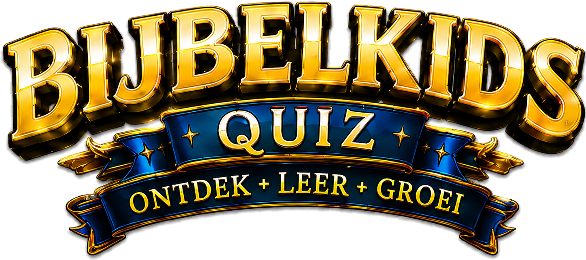

Laatst bijgewerkt: 20 november 2026
Op deze pagina vindt u teksten en beeldmateriaal over de Bijbelkidsquiz, bestemd voor PR en publicatie in parochiebladen, nieuwsbrieven, kerkbladen en andere media. U mag de teksten vrij overnemen en waar nodig inkorten. Wij stellen een vermelding van bijbelkidsquiz.nl op prijs.
De Bijbelkidsquiz is een gratis online Bijbelquiz voor kinderen van 8 tot 12 jaar, met vragen over alle boeken van het Nieuwe Testament. Bij de antwoorden hoort een korte uitleg, zodat kinderen spelenderwijs de Bijbel leren kennen. Zonder reclame en zonder account. Speel mee op bijbelkidsquiz.nl.
Hoe goed kennen kinderen de verhalen van Jezus en de apostelen? Met de Bijbelkidsquiz ontdekken kinderen van 8 tot 12 jaar het Nieuwe Testament op een speelse manier. Het spel bevat meer dan duizend vragen over alle boeken van het Nieuwe Testament, op drie niveaus: brons, zilver en goud. Na elke ronde krijgen kinderen een korte uitleg bij de antwoorden, en in de Bijbeltraining kunnen ze rustig nalezen en oefenen. Wie goed speelt, verdient trofeeën en opent schatkisten.
De Bijbelkidsquiz is interkerkelijk en geschikt voor kinderen uit alle christelijke kerken. Het spel is volledig gratis, bevat geen reclame en werkt zonder account: de voortgang blijft op het eigen apparaat. Voor kinderen thuis en samen met hun ouders, en ook bruikbaar in catechese en kinderwerk.
Speel mee op bijbelkidsquiz.nl
Hoe goed kennen kinderen de verhalen van Jezus en de apostelen? Met de Bijbelkidsquiz ontdekken kinderen van 8 tot 12 jaar het Nieuwe Testament op een speelse manier. Ze kiezen een Bijbelse figuur als speler, zoals Maria, Mozes of Ester, en beantwoorden vragen over alle boeken van het Nieuwe Testament, van Matteüs tot Openbaring. Het spel bevat meer dan duizend vragen op drie niveaus: brons, zilver en goud.
Leren staat voorop. Na elke ronde krijgen kinderen een korte uitleg bij de antwoorden. In de Bijbeltraining kunnen ze de vragen rustig nalezen en oefenen, en in de rubriek Ontdekken zoeken ze moeilijke woorden, beroepen en groepen uit de Bijbel op. Wie goed speelt, verdient trofeeën in de Schatkamer en opent de schatkisten, met als hoogste beloning de Verborgen Schat.
De Bijbelkidsquiz is interkerkelijk en geschikt voor kinderen uit alle christelijke kerken. Het spel is volledig gratis, bevat geen reclame en werkt zonder account: de voortgang blijft op het eigen apparaat. Het spel werkt op de computer, laptop en tablet, en ook op de telefoon. De game wordt regelmatig uitgebreid met nieuwe vragen en onderdelen.
De Bijbelkidsquiz is gemaakt door Roel Elbers uit Heilig Landstichting bij Nijmegen.
Speel mee op bijbelkidsquiz.nl

Download het logo (PNG met transparante achtergrond, 1444 × 644 pixels)
E-mail: info@bijbelkidsquiz.nl